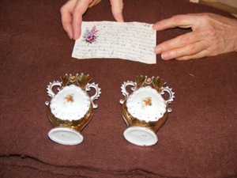
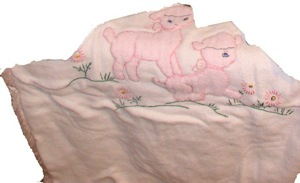
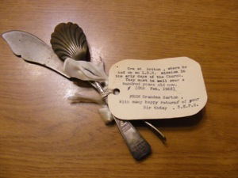

An experience in the life of Sarah Elizabeth Perkins Barton
as told to her by her mother Sarah Perkins.
Late in the fall of 1886 or possibly 1887, Sarah [Williams Perkins] who had been helping all summer at the dairy farm of her brothers on Cedar Mountain, left the ranch with her brother Will on a warm sunny day. The big farm wagon in which they traveled was loaded to capacity high up under the canvas covered bows with farm and dairy products they intended to exchange at the markets in Beaver for other winter necessities. This trip required two or three days in fair weather and necessitated a night or two camp-out in the open on a seldom traveled road. But, Sarah, babe in arms, sat comfortably perched beside her brother on the spring seat and reveled in the beauties of the colorful mountain scenery, little dreaming of the hazards that lay ahead.
The first day of travel passed without incident but the campers slept only fitfully because of the unaccustomed hardness of the beds. They awakened in the morning to a sky full of ominous heavy gray clouds and almost before they could get on their way; with only a cold breakfast, storm had set in: fluffy flakes of wild driving snow that melted and soaked them to the skin in spite of all efforts to protect themselves. By mid morning the horses were no longer walking or trotting. Every forward advance was made with lurching and plunging. Momentarily the temperature dropped lower. Suddenly there was a sickening sound: The sound of splintering wood distinctly heard even above the roaring tempest. The team lunged forward a pace or two and stopped. The front of the wagon box tipped down to a precarious angle almost throwing the occupants onto the heels of the horses. Will knew in a minute what had happened. The wooden reach that holds the front and back framework of a wagon together had taken one too many hard jolts. What was he to do?
Miles from a work shop, inadequate tools and no material except “a Westerner’s Salvation” bailing wire. With hands almost paralyzed with cold he worked for hours trying to repair the wrecked reach, but to no avail. What should he do? Night was almost upon them. No open fire could cope with the raging storm even if fuel could be found to make one. He must get Sarah to shelter somewhere.
He helped the almost unconscious Sarah on one of the horses, placed the faintly whimpering babe in her left arm, wrapped a blanked around and tied them securely together. In Sarah’s gloved right hand he placed a large strand of the Horse’s mane with strict warning that she should in no case relinquish her hold on that strand. Taking the rein to lead her horse, so they would not get separated he climbed onto the other horse and leaving their wrecked treasure rode off into the darkness of night with a fervent prayer in their hearts that some how, some where, they would find shelter or succor before it was too late. After riding for what seemed an eternity in the unabating storm, they were accosted with a lusty, “Who goes there?” to which Will answered with an almost indistinguishable, “Friends!” Immediately a lone horseman approached them. It was a sheepherder out searching for some stray aways. He told Will he knew now why he had been impelled to back track on territory he had already searched. He took them at once to his camp a few miles distant from the road side: a sturdy tent with a large camp stove where his partner awaited him with a hot fire and a steaming pot of coffee, which in a short time restored Will to partial normalcy. The almost unconscious Sarah took much longer to revive.
The infant whom they found frozen stiff and rigid as a block of ice, with no perceptible pulse or trace of breath, in spite of prolonged revival efforts, they had lain for dead, still wrapped in the icy blanket, on a burlap bag filled with wood shavings, near the entrance.
The surviving mother’s first thought was for her little one. She was distraught with sorrow and insisted that thy resume revival efforts at once. She herself began what proved to be an all night vigil. Alternating snow-packs, warm blankets, massaging and any and every other restorative art known to them, accompanied by her ceaseless, silent prayer.
In the wee hours of the morning a faint flutter of breathing rewarded their efforts. With tears streaming down her face unabashed, Sarah dropped to her knees and audibly thanked God for the life of “Little Sadie”.
The account of this experience I heard for the first and only time from the lips of my mother while I was staying a few weeks with her at her home in Salt Lake City, before and following her eye operations; I believe in 1942.
Because of the pain and emotional distress the telling brought to both of us, I did not ask, nor did she proffer any retelling. I have written the account of the incident as true to fact as the memory of an emotional listener provides. That may have been the ONLY time mother told—in detail–the story. One of my older sisters, Lell or Beatrice, I have forgotten which told me she once briefly mentioned the experience to them, with a promise of more later, but that time never came.
S.E.B.P July 1971 Monticello, Utah.
“The Perkins Family History” tells this story as follows on pages 74-75: Ben and Mary Ann moved with their family to Teasdale, Wayne Co., Utah and began building two homes. Sarah was with her family on Cedar Mountain to run a dairy. “In the late fall, my brother will accompanied me to Beaver where we expected to exchange my cheese for woolen goods and other supplies. While on the desert we had the misfortune to break a wheel off the wagon, and to add to this trouble, we were caught in a raging blizzard of snow, with no means of making a fire. Will managed to make a cart with the front wheels and running gears of the wagon and we traveled in this fashion for about ten miles. We reached a cowboy’s shack but my infant daughter and I were nearly frozen to death. Had it not been for the cowboys, I feel that we likely would have perished.
“The following spring I joined my husband in Wayne County.” with a footnote source as: Lyman, Albert Robinson, Autobiography of Sarah Williams Perkins (1931)(manuscript)
I thought it would be fun to also share pictures of things given to us by Grandma Sarah Barton.
{kind=link}
Callie received two vases given to her by Grandma’s Aunt Jane when Sarah was about 20 years old. She had gone from Provo to visit her in Cedar City. Her Aunt Jane was born 19 July 1867 in Wales .
{kind=link}
The quilt was made for Jed when he was born. The only picture I had of it was on a table with things on top so I cut them out.
{kind=link}
Bodell received a sugar spoon and butter knife that originally came from Great Britain and were given to Alice Elizabeth Jane Cook Barton by her husband Ethelbert when he returned from a mission to England.
- 24 Jan 2012 - Converted to markdown by Daniel Esplin.